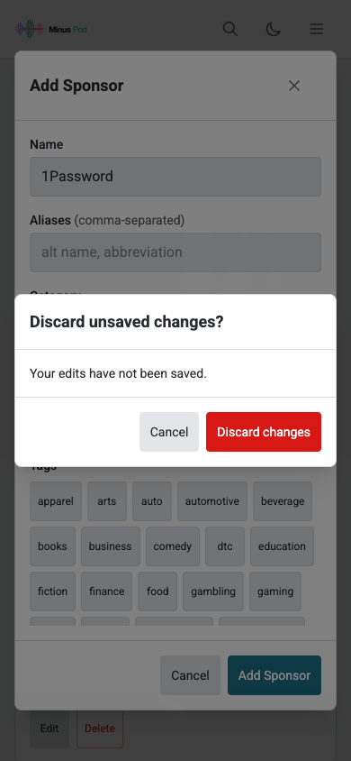

Feeds: 390 CSS px
Actual backup. Shared colors, target sizes, and shell spacing.
Feeds: 1440 CSS px
Actual backup. Shared colors, target sizes, and shell spacing.
Populated search: 390 CSS px
Actual backup. Filters fit with real result counts; maintenance controls follow results.
Populated search: 768 CSS px
Actual backup. Filters fit with real result counts; maintenance controls follow results.
Populated search: 1440 CSS px
Actual backup. Filters fit with real result counts; maintenance controls follow results.
Processing History: 768 CSS px
Actual backup. Cards and sorting at tablet width; consistent summary typography.
Processing History: 1440 CSS px
Actual backup. Cards and sorting at tablet width; consistent summary typography.
Patterns: 390 CSS px
Actual backup. Shared tabs, controls, and contrast.
Patterns: 1440 CSS px
Actual backup. Shared tabs, controls, and contrast.
Episode detail: 390 CSS px
Actual backup. Shared colors and controls; audio files are unavailable.
Episode detail: 1440 CSS px
Actual backup. Shared colors and controls; audio files are unavailable.
Add Feed: 390 CSS px
Actual components; API requests fail in both revisions. Shared control sizing and contrast.
Add Feed: 1440 CSS px
Actual components; API requests fail in both revisions. Shared control sizing and contrast.
Import patterns: 390 CSS px
Actual components; API requests fail. Named dialog and associated labels.
Import patterns: 1440 CSS px
Actual components; API requests fail. Named dialog and associated labels.
Queue unavailable: 390 CSS px
Actual failed requests. Unavailable processing status has an explicit retry action.
Queue unavailable: 1440 CSS px
Actual failed requests. Unavailable processing status has an explicit retry action.
Settings unavailable: 390 CSS px
Actual failed requests. A persistent heading and retry state replace repeated skeletons.
Settings unavailable: 1440 CSS px
Actual failed requests. A persistent heading and retry state replace repeated skeletons.
Explicit discard decision
After: editing a sponsor and closing the dialog prompts before discarding changes. Cancelling preserves the draft.
